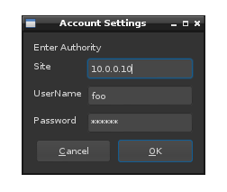
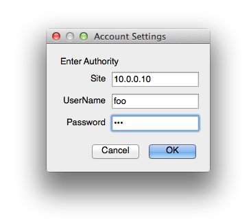
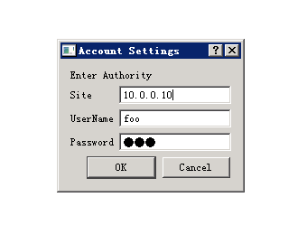
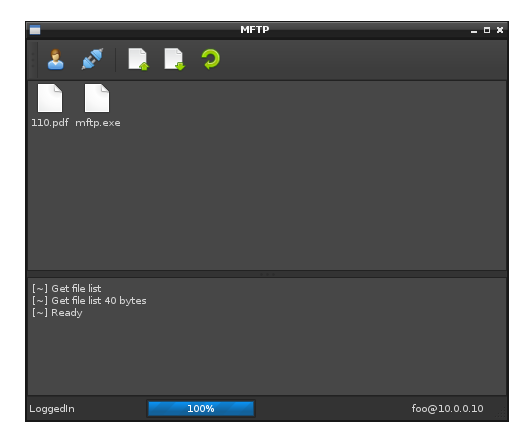
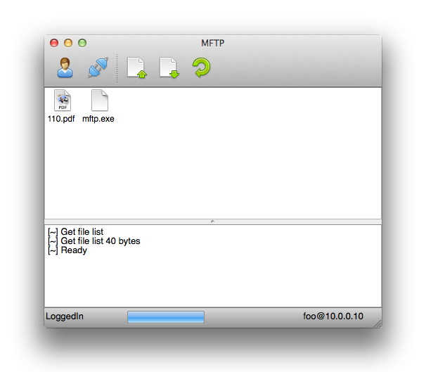
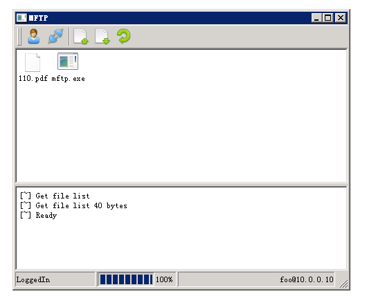

# README
Unlike other ftp client, MFtp does not require `LS` permission on the server side.
## Download and Install
<table>
<tr>
<td>Linux (x86/ARM)</td><td>Mac OS X</td><td>Windows</td>
</tr>
<tr>
<td style="text-align:center;"><br/><a class="btn platform-specific" platform="linux" platform_val="btn-primary" href="mftp.tgz">Download</a></td>
<td style="text-align:center;"><br/><a class="btn platform-specific" platform="macos" platform_val="btn-primary" href="mftp.dmg">Download</a></td>
<td style="text-align:center;"><br/><a class="btn platform-specific" platform="win32" platform_val="btn-primary" href="mftp.zip">Download</a></td>
</tr>
</table>
MFtp is a **green** software. Unzip the zipball, copy the executable somewhere.
* If you want to use the Command Interface, add the directory containing the executable into `PATH`
Special Notes:
* For Linux users, MFtp depends on python2 (2.7 or higher) and PyQt4 (4.6 or higher). Install the dependency upon your distribution.
* For Mac OS X users, the directory you have to add is `mftp.app/Contents/MacOS/` and you have to add the directory to the tail of `PATH`.
## Quick Start (Command Line)
### First time - register the ftp account
$ mftp -nogui
Here `$` means the command prompt. May be `C:\>` likewise under Windows or `%` under some Linux distributions.
MFtp will ask for the site name, do not enter `ftp://` prefix
Site Name :10.0.0.10
Next MFtp will ask for the username and password. When entering the password, there'no echo back.
Username [admin]:foo
Password:
MFtp will save the account information and exit.
Special Notes:
* User can also specify the site same via command parameter `--site SiteName` or `-s SiteName`
* User can also specify the username via command parameter `--user UserName` or `-u UserName`. In this case **account information will not be saved**
* User can reset the saved account information via command parameter `-a reset`
### Daily Use - List, Download and Upload
* List the files in the ftp server:
$ mftp -list
[Status] HostLookup
[Status] Connecting
[Status] Connected
[Status] LoggedIn
[~] Get file list
[~] Get file list 40 bytes
[~] Ready
110.pdf
mftp.exe
* Download a file:
$ mftp -get 110.pdf
* Upload a file:
$ mftp -put 111.pdf
* Download the recent uploaded file:
$ mftp -get
You don't have to type your account information everytime.
## Quick Start (GUI)
### First time - register the ftp account
Run MFtp without any parameter will invoke GUI. At the first time, MFtp asks for account information.
<p class="platform-visual" platform="linux"></p>
<p class="platform-visual" platform="macos"></p>
<p class="platform-visual" platform="win32"></p>
Enter the sitename, username and password, then Press `OK`.
### Daily Use - List, Download and Upload
The MFtp UI contains a toolbar, a file viewer, a log window and a statubar.
<p class="platform-visual" platform="linux"></p>
<p class="platform-visual" platform="macos"></p>
<p class="platform-visual" platform="win32"></p>
* To modify the registered account information, click the `Account` button in the toolbar.
* To connect to the ftp server, click the `Connect` button in the toolbar. If success, the button changes to `Disconnect`.
* To upload a file, click the `Upload` button in the toolbar and browse to your file.
* To download a file, select a file in the file viewer and click the `Download` button in the toolbar and browse to your save location.
* To refresh the file viewer, click the `Refresh` button.
When you need to change the account information, disconnect from the server first.